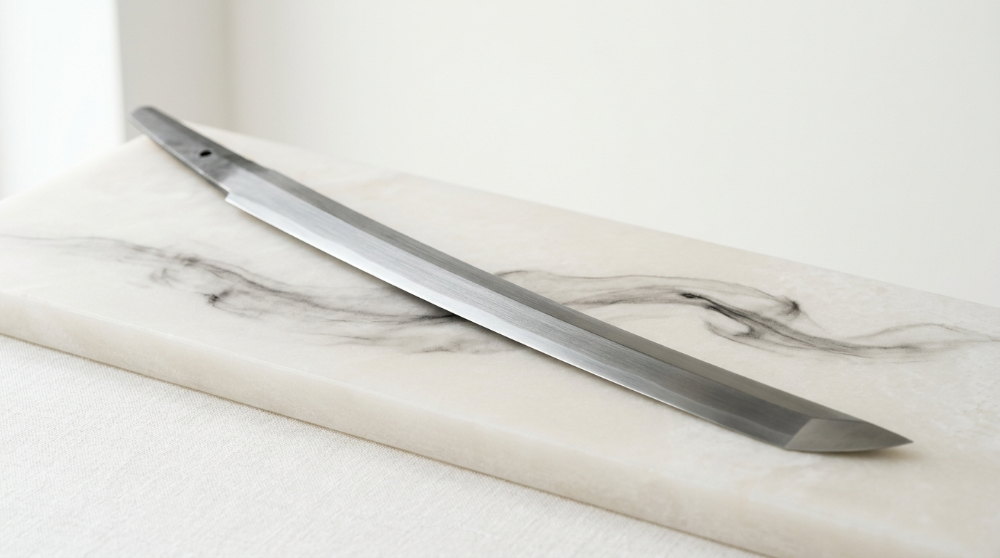
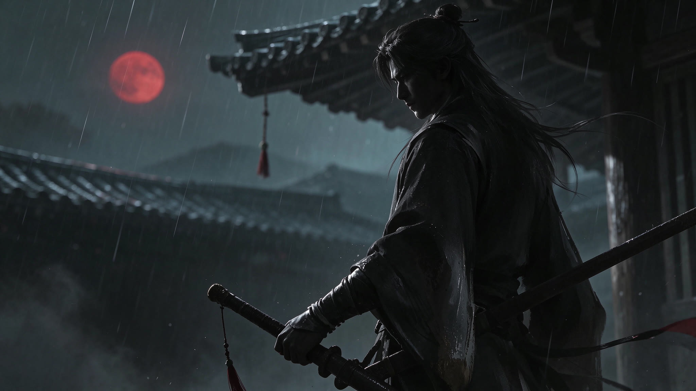
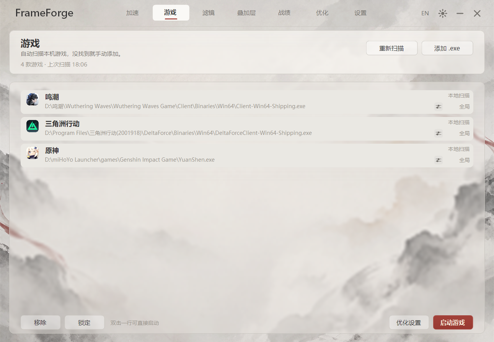
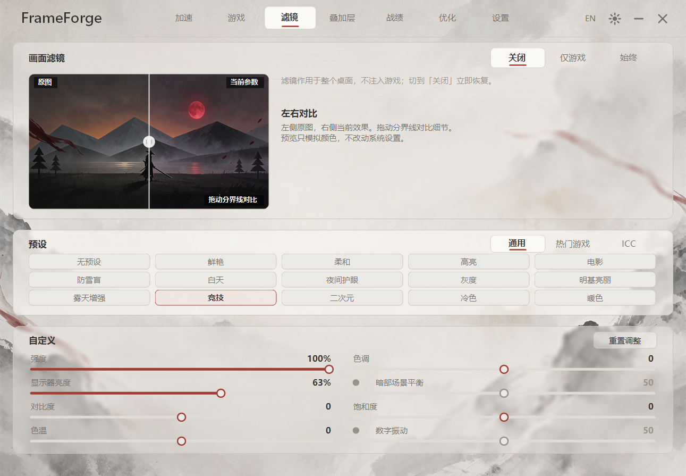

STANCE I
SCTL v2 事务日志与看门狗
电源计划、1 ms 系统计时器、进程优先级与内存整理，全部在执行前以 HMAC 签名记录原始快照。即便断电或强杀进程，独立看门狗也会把系统还原到分毫不差。
约 7.1 MB 单文件的原生 Windows 帧率增效与监测工具。通过 Intel PresentMon ETW 采集实时帧率与 1% Low，默认零 DLL 注入；所有系统调度由签名事务日志托管，收剑即复原。
加速不难，难的是收得干净。
每一次电源计划、1 ms 计时器与进程调度改动，都会在执行前写入带 HMAC 签名的原始快照。退出、崩溃、断电，系统都会回到你出发的地方。
约 7.1 MB 的绿色 exe，不装服务、不驻留后台。
不碰游戏渲染管线，反作弊组件永久排除。
签名日志加独立看门狗，异常退出自动还原。

二十三套硬件滤镜、P 核软引导、PresentMon 帧采样——每一项能力都不进入游戏进程，也不在你的系统里留下痕迹。
不是把设置项堆在一起，而是把每一个改动都变成可验证、可撤销的动作。

电源计划、1 ms 系统计时器、进程优先级与内存整理，全部在执行前以 HMAC 签名记录原始快照。即便断电或强杀进程，独立看门狗也会把系统还原到分毫不差。

针对大小核与多 CCD 处理器，提供自动、P 核优先与单 CCD 策略。每两分钟采样最空闲的物理核心，轻柔引导游戏主线程，不暴力锁死亲和性掩码。

绕开易触发反作弊的 Shader 注入路径，改用系统放大镜色彩矩阵、Gamma LUT 与 NVIDIA NVAPI 数字振动完成实时调色，并原生支持 DDC/CI 背光与 .icc 校色文件。

退出游戏瞬间生成完整战报，涵盖平均帧率、1% Low、核心温度与整卡功耗。本地保留最近 300 局的帧率走势，支持一键导出标准 CSV。
v1.7.0 重构了整套叠加层视觉。等宽数字保证帧率波动不抖列，五套配色与三档底板在自绘分层窗口、RTSS 与设置预览之间完全一致。
无边框窗口模式下由自带分层窗口直接绘制，不触碰游戏渲染管线；独占全屏下可一键交由 RTSS 同步呈现同等配色与主视觉字号。
不仅官网具备黑白双境，FrameForge 本体同样以纯原生 GDI+ 绘制整卡毛玻璃与水墨底纹，无第三方重型 UI 框架。拖动剑锋或使用方向键对比两套实机界面。


全部源代码以 MIT 协议开源，无需安装 Visual Studio，直接调用 Windows 自带的 .NET Framework 4.8 编译器即可从零构建。
| 维度 | FrameForge | 传统优化与监控套件 |
|---|---|---|
| 体积与部署 | 单文件约 7.1 MB，免安装无服务残留 | 数十至数百 MB，常附带多项后台服务 |
| 反作弊兼容 | 默认零 DLL 注入，反作弊组件永久排除 | 普遍注入渲染钩子，易与部分反作弊冲突 |
| 系统回滚 | 签名事务日志加看门狗，崩溃自动还原 | 缺少事务记录，异常退出常遗留改动 |
| 隐私与源码 | MIT 全量开源，零遥测零广告 | 闭源、弹窗推广或强制登录 |
在 Windows 10 或 Windows 11 上直接编译，或核对 v1.7.0 发布件哈希。